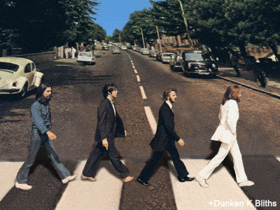
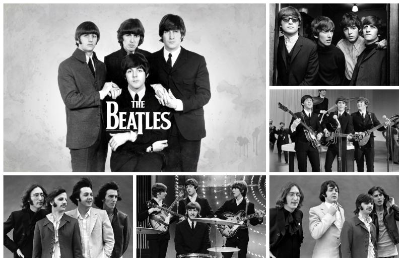
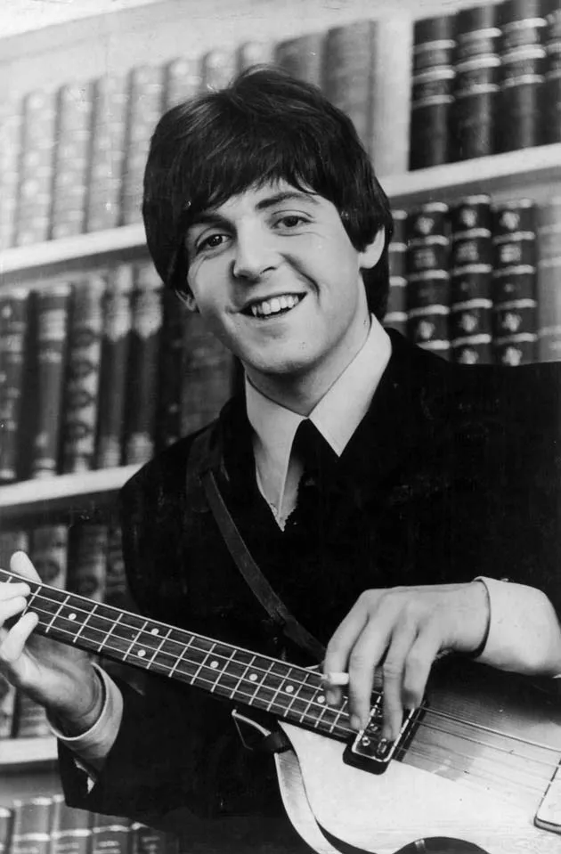
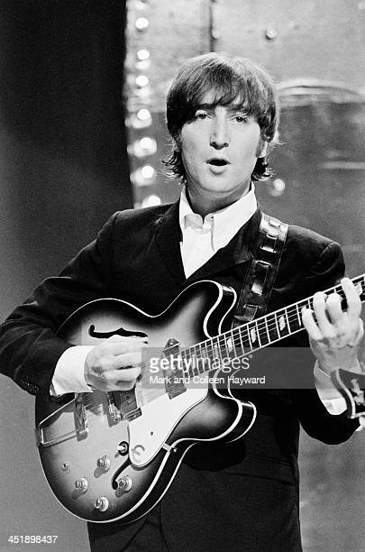
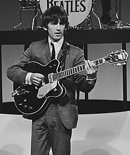
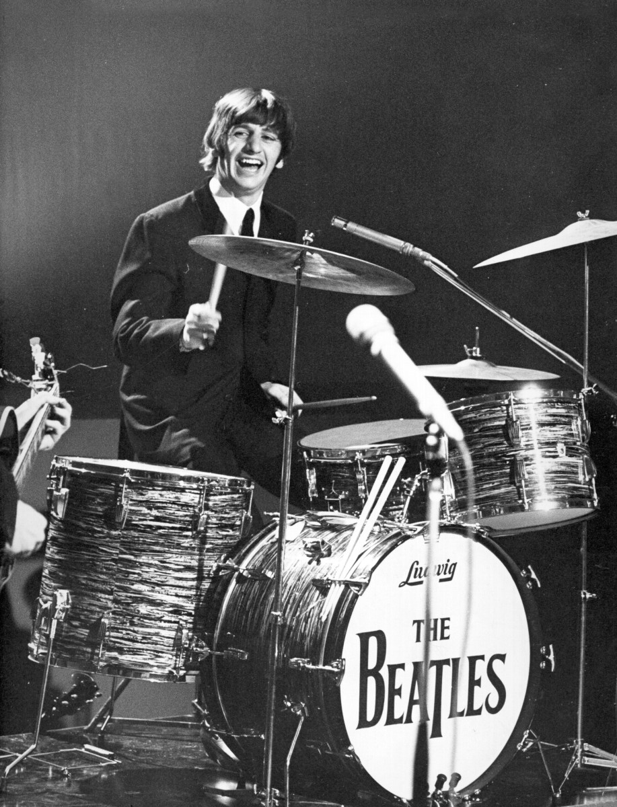

The Beatles
Բրիտանական աշխարհահռչակ ռոք-խումբ
Մեր կայքը նախատեսված է "The Beatles"-ի սիրահարներին օգնելու համար, ճիշտ կողմնորոշվել նրանց երգերի մեջ, դիտել նրանց կողմից նկարահանված բոլոր ֆիլմերը, լսել բոլոր երգերը և այլն։
"The Beatles" խմբի մասին
Բիթլզ (անգլերեն՝ The Beatles) Բրիտանական աշխարհահռչակ ռոք-խումբ՝ կազմավորված Լիվերպուլում, 1960 թվականին։ Խմբի անդամներն են Ջոն Լենոնը, Փոլ ՄաքՔարթնին, Ջորջ Հարիսոնը և Ռինգո Սթարը։ Կարճ ժամանակում Բիթլզը լայն ճանաչում ձեռք բերեց՝ դառնալով Մեծ Բրիտանիայի և ամբողջ աշխարհի կարևորագույն և ազդեցիկ երաժշտական խումբը։ Սկզբնավորվելով սքիֆֆլից, բիթից և 1950-ականների ռոքնռոլից՝ Բիթլզը հետագայում տարբեր երաժշտական ժанրեր փորձարկեց․ փոփ-բալլադներից և հնդկական երաժշտությունից մինչև փսիխոդելիկ ու ծանր ռոք՝ հաճախ նորարարական եղանակներով ներմուծելով դասական և ոչ ավանդական երաժշտական տարրեր։ 1963 թվականին սկսվեց խմբի հսկայական տարածումը՝ «բիթլամանիան»։ Հաջորդ տարում նրանք արդեն ստացան «հրաշալի քառյակ» անվանումը, իսկ արդեն 1964 թվականին դարձան միջազգային աստղեր՝ գլխավորելով ամերիկյան փոփ-շուկան։ 1965 թվականից սկսած՝ Բիթլզն ավելի նորարարական ձայնագրություններ սկսեց թողարկել․ Rubber Soul (1965), Revolver (1966), Sgt. Pepper's Lonely Hearts Club Band (1967), The Beatles (նաև հայտնի որպես White Album, 1968) и Abbey Road (1969): 1970 թվականի փլուզումից հետո խմբի անդամներից յուրաքանչյուրը հաջողության հասավ որպես մենակատար։ Ողջ աշխարհում շուրջ 800 միլիոն ֆիզիկական և թվային ալբոմների վաճառքով Բիթլզը պատմության մեջ լավագույն վաճառք ապահոված երաժշտական խումբն է։ Այն ավելի շատ է գլխավորել բրիտանական չարտերը և Անգլիայում ավելի շատ սինգլներ վաճառել, քան մեկ այլ արտիստ։

"The Beatles" խմբի անդամների մասին

Սըր Փոլ ՄաքՔարթնի (անգլ.՝ Sir Paul McCartney) Բիթլզի բաս-կիթառահարն էր։ Ծնվել է հունիսի 18, 1942 Լիվերպուլում։ Փոլի դպրոցական ընկերներից մեկը՝ Իվեն Վոուենը, ով ժամանակ առ ժամանակ նվագում էր Ջոն Լենոնի The Quarrymen խմբում, հրավիրեց նաև Փոլին։ ՄաքՔարթնիի առաջին հանդիպումը Լենոնի հետ տեղի ունեցավ 1957 թվականի հուլիսի 6-ին։ Հետագայում խումբը վերանվանվեց The Beatles։ ՄաքՔարթնին գրանցվել է Գինեսի գрքում որպես աշխարհի ամենահաջողակ երաժիշտ-երգահան շուրջ 60 «ոսկե» սկավառակներով և 100 միլիոն վաճառված սինգլներով։
Ջոն Լենոն (անգլ.՝ John Lennon) Բիթլզի ռիթմ-կիթառահարն էր։ Ծնվել է 1940 թվականի հոկտեմբերի 9-ին Լիվերպուլում: Լենոնը 1956 թվականին իր դպрոցական ընկերների հետ միասին հիմնադրում է «The Quarrymen» խումբը, անվանված դպրոցի պատվին, որտեղ նրանք բոլորը սովորում էին։ 1957 թվականի հուլիսի 6-ին Լենոնը ծանոթանում է Փոլ ՄաքՔարթնիի հետ և նրան ընդունում «Quarrymen», որը հետագայում վերանվանվեց The Beatles։ Շուտով Փոլը խումբ է բերում իր ընկեր Ջորջ Հարիսոնին։ Բացի իր երաժշտական գործունեությունից, Լенոնը հայտնի էր նաև որպես քաղաքական ակտիվիստ։ 1980 թվականի դեկտեմբերի 8-ին Ջոն Լենոնը սպանվում է ԱՄՆ-ի քաղաքացի Մարկ Դևիդ Չեպմենի կողմից։


Ջորջ Հարիսոն (անգլ.՝ George Harrison) Բիթլզի սոլո-կիթառահարն էր։ Ծնվել է 1943 թվականի փետրվարի 25-ին Լիվերպուլում։ 1956թ. Ջորջը հանդիպում է Փոլ ՄաքՔարթնիի հետ, որը նույնպես սովորում էր նույն դպրոցում։ 1957 թվականի մարտին Ջոն Լենոնը ստեղծում է The Quarrymen նվագախումբը։ Մի քանի ամիս անց նրանց խումբ է ընդունվում նաև Փոլ ՄաքՔարթնին։ Մասնավորապես ՄաքՔարթնին Լենոնի ուշադրությունը հրավիրում է Հարիսոնի վրա, խորհուրդ տալով նրան որպես իր ընկերոջ, ով կարող է կիթառ նվագել: Հետագայում խումբը վերանվանվեց The Beatles։ Հարիսոնը մահացավ 2001 թվականի նոյեմբերին՝ թոքերի քաղցկեղից։
Ռինգո Սթար (անգլ.՝ Ringo Starr) Բիթլզի հարվածային գործիքներն էր։ Ծնվել է 1940 թվականի հուլիսի 7-ին Լիվերպուլում։ 1962 թվականի օգոստոսի 18-ին Ռինգոն պաշտոնապես մտնում է The Beatles-ի կազմի մեջ։ Սկզբում նա երգում էր Rory Storm and the Hurricanes բիթ-խմբում, որը այդ ժամանակ Լիվերպուլում համարվում էր The Beatles-ի գլխավոր մрցակիցը։ Խմբի պաշտոնական լուծարումից հետո, ինչպես մյուս բիթլները, Ռինգո Սթարը սկսեց ձայնագրել սոլո նյութեր։
